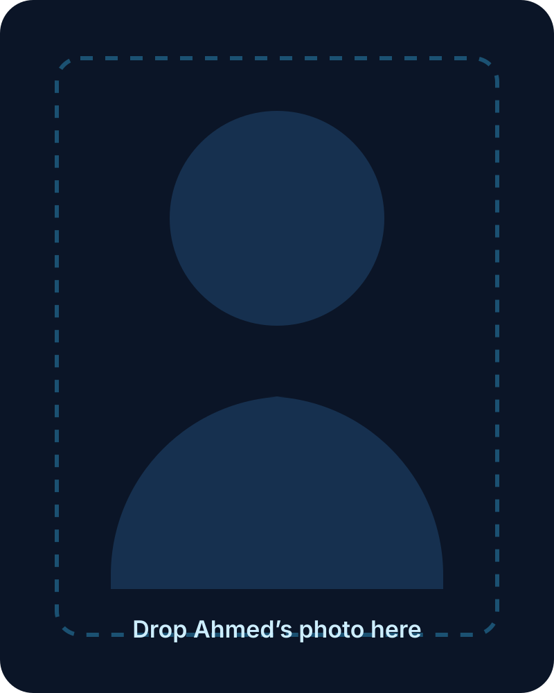

0
Customers supported in a quarter
San Francisco-based • Apple Technical Specialist • QA-minded
I help people solve technical problems calmly, clearly, and fast — with hands-on experience across Apple Retail, QA testing, training, and software projects.

Add Ahmed’s photo here0
Customers supported in a quarter
0
Customer NPS score
0
Employees trained
0
Core lanes: support, QA, training, projects
About
I’m Ahmed AlOtaibi, a technical support professional with a background in Apple Retail, QA testing, employee training, and software projects. I do my best work at the intersection of people, troubleshooting, and technology.
I like stepping into problems that feel unclear at first, bringing structure to them, and turning them into workable next steps. Whether I’m supporting customers directly, training teammates, or validating product behavior, I care about clarity, ownership, and making the experience better for the person on the other side.
What I bring
Experience
Troubleshoot hardware, software, account, and device issues across Apple products and services in a fast-paced customer environment.
Conducted training programs to improve technical knowledge and customer service readiness while supporting onboarding and team development.
Executed test plans for Location Framework features and validated regressions across releases.
Oversaw daily store operations, inventory management, cash handling, and vendor coordination.
Project
Updated an open-source iOS radio app for newer Apple operating systems and helped keep it usable across devices.
Project
Built API-connected side projects including a weather app and experiments using Anthropic and OpenAI APIs.
Skills
macOS support, hardware and software troubleshooting, customer support, inventory coordination, training, Swift, SQL, JavaScript, XCTest, Jenkins, and API integration.
Contact
I’m interested in technical support, IT operations, QA, and product-facing roles where I can help people, solve real problems, and keep growing.